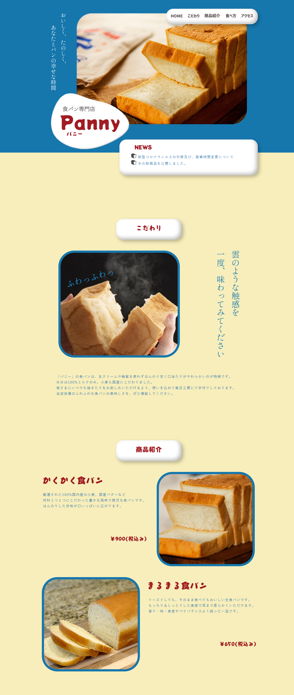
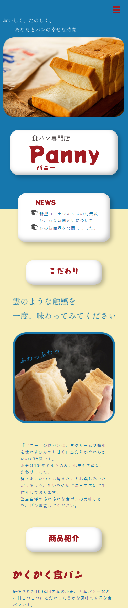

デザイン～コーディングまですべて
職業訓練校の最終課題で、架空の食パン専門店「Panny」のLPサイトを制作。
制作目的は、新規顧客の集客・知名度の向上としました。
食パン専門店を題材とした理由は、昨今の高級食パンブームを受けて「他の食パン専門店との差別化を図るにはどうすれば良いか」を考えてみたいと思い、制作に至りました。
お店の名前を『Panny』と名付けた理由は「ちょっぴり変わったパン屋さん」という意図で、「パン」と「Funny（おかしな）」を組み合わせて考えました。
「食パン専門店＝高級でとっつきにくいもの」ではなく、もっと身近に感じられつつ日常的に親しみやすくなるようなデザインを目指しました。
赤と青を配色することで、昭和レトロのような可愛らしい印象にできたのではないかと思います。
また、商品のウリである食パンの「ふわふわ触感」を表現したかったので、「雲」をもう一つのテーマとして制作しました。
ナビゲーションや見出しなど、影をつけたり丸みを帯びさせたりすることで、プカプカ浮いているような雲を表現しました。
こちらのCSSは以下URLの「クレイモーフィズム」を参考にさせていただきました。
参考サイト：https://coliss.com/articles/build-websites/operation/css/claymorphism-to-any-html-element.html
デザインカンプ作成・ライティング：約6時間
コーディング・レスポンシブ対応：約6時間×2日（計12時間）
修正：約10時間
合計：約28時間
<①期間内に確実に完成させること/p>
職業訓練校での制作期間がおおよそ3日間という短い期間だったので、まずは期間内に完成できることを第一の目標としました。
そのために、一日目でデザインカンプを完成、二日目にコーディング、三日目にレスポンシブ対応と計画を立て取り組みました。
計画通りに進めることができたことで、余った時間で修正を行なったりCSSやJavaScriptで動きを足したり出来たので、計画を立ててから着手することは結構大事だなと思いました。
②レスポンシブ対応
タブレットサイズの場合にはナビゲーションを上部に固定し、スマートフォンサイズの場合には、ハンバーガーメニューが右上に固定表示されるようにして、ページ内スクロールが簡単にできるようにしました。
しかしナビゲーションを固定した場合、ページ内スクロールが少しずれてしまうことが分かり、その調整がとても大変でした。
③フォントやコンテンツの工夫
フォントは、「」という個性的なレトロ感のあるフォントを使用しました。
キャッチコピーのみ、明朝体を使用し縦書きにすることで、目につきやすくなり、昭和のような雰囲気が出るよう工夫しました。
他にも、「食べ方」のページで商品のおすすめの食べ方を紹介することで、お客様が自分でパンを購入した時のイメージがしやすくする工夫をしました。
レスポンシブ対応で、ナビゲーションを上部固定にした際にページ内スクロールをすると少しだけ位置が見出しよりずれてしまうことが分かり、その調整がとても大変でした。
また、職業訓練校で他の人にデザインイメージを伝えずに当サイトを見てもらったところ、「昭和レトロのような雰囲気がある」と言ってもらえたので、デザインイメージが伝わったことがとても嬉しかったです。
Photoshop、illustrator、Dreamweaver
PC
スマートフォン